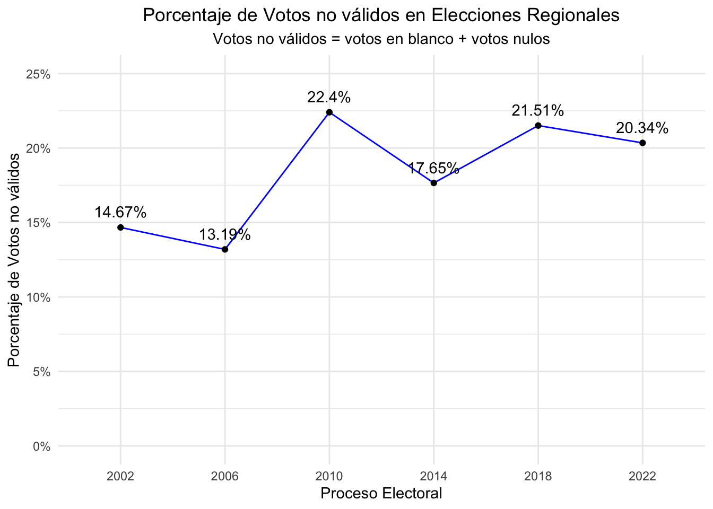
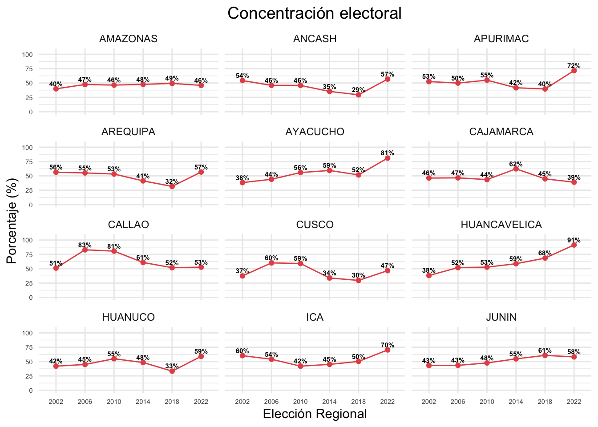
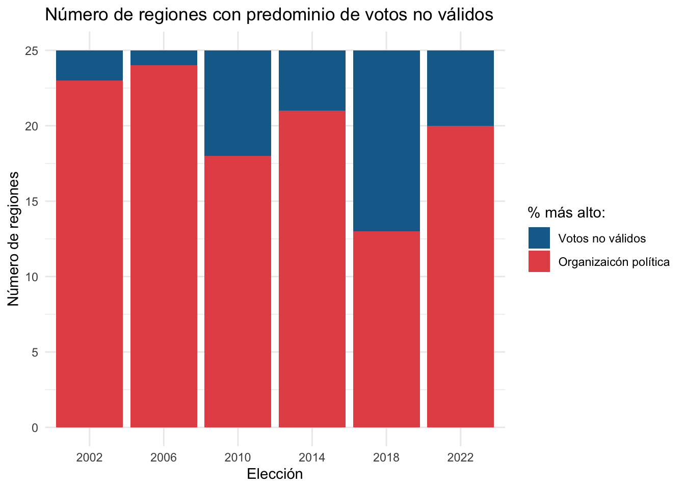
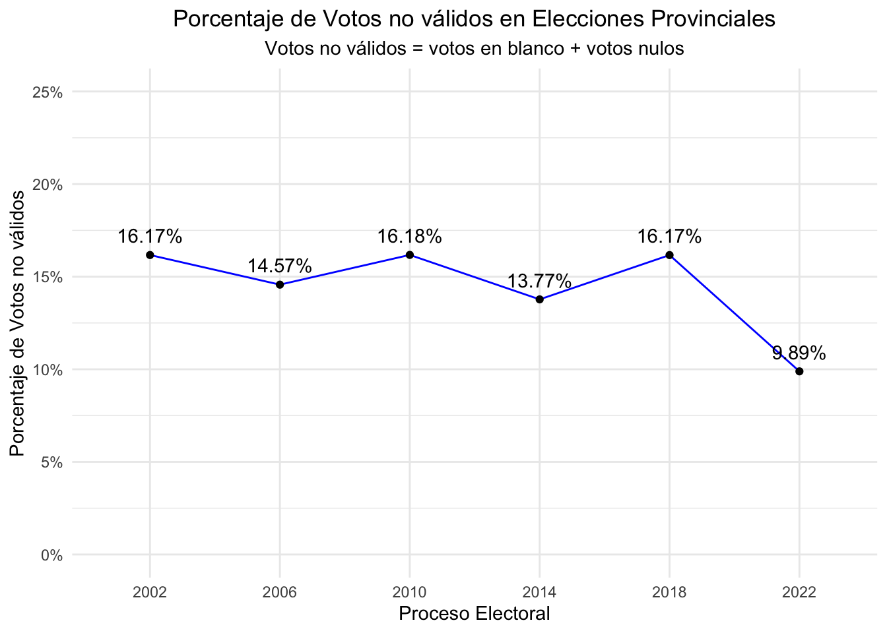
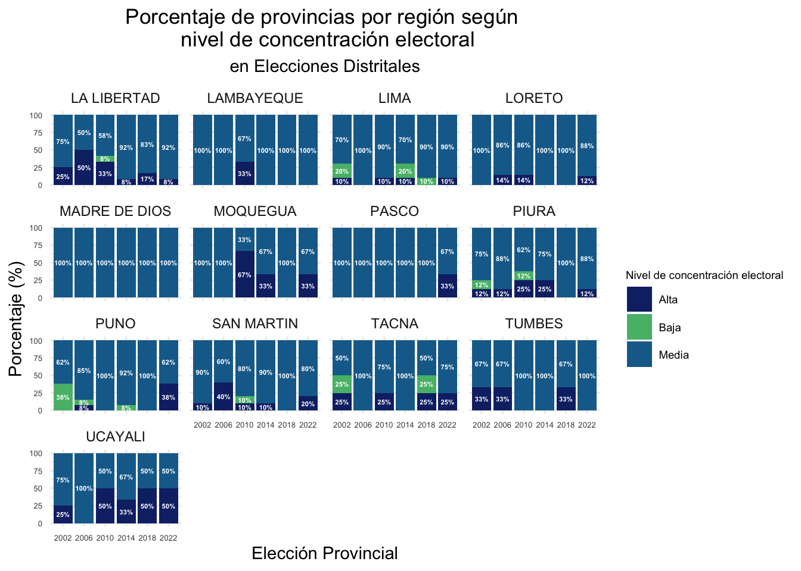
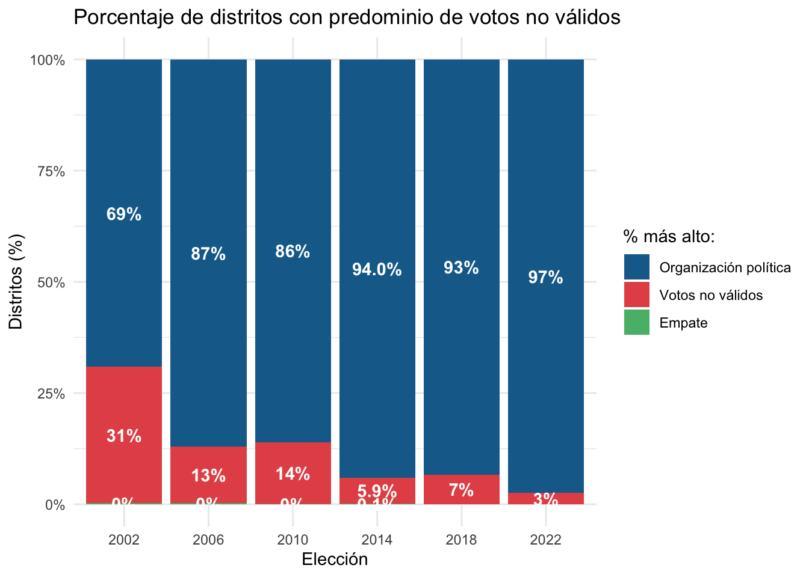

El voto no válido
El porcentaje del voto no válido supera al voto de la organización política ganadora.
El voto nulo o blanco están ganado en porcentaje al ganador
¿Representatividad?
Porcentaje votos no válidos (de nulos y blancos) (el total es en base a votos de emitidos)
En el 2002, en 5 regionales , el voto nulo ganó al voto del ganador.
Elecciones Regionales

Porcentaje de Voto no válido según región


Porcentaje de votos no válidos versus Porcentaje de votos por la organización política ganadora en las Elecciones Regionales

Elecciones Provinciales

Ganador vs. no válido

Elecciones Distritales

Porcentaje de no valido vs organización política ganadora a nivel distrital
